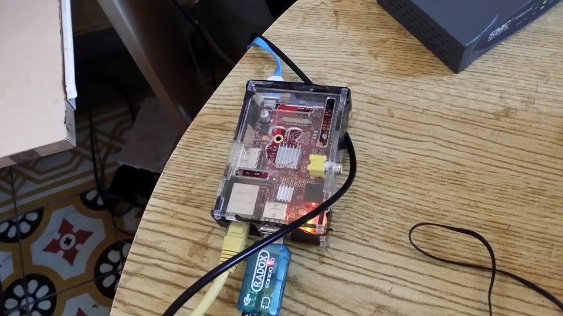

Requerimientos
Evidentemente necesitamos una Raspberry Pi, esta será la encargada de tener el control total de nuestro proyecto de procesamiento de audio, es decir la razón del proyecto.
El cable ethernet se necesita para crear la comunicación del Raspberry Pi con nuestra computadora. Se necesitará también al momento de "levantar" por primera vez la Raspberry Pi.
Necesitaremos un cargador que cumpla con las especificaciones eléctricas de la Raspberry Pi.
Necesitaremos un par de bocinas para poder reproducir el sonido que liberé nuestra aplicación, además de que la utilizaremos para ciertas pruebas de audio.
Necesitaremos una memoria SD ya que será aquí en donde cargaremos el sistema operativo Raspbian que le dará las funciones necesarias a la Raspberry Pi para poder trabajar con ella.
Necesitaremos una tarjeta de sonido ya que esta nos proporcionará una variante de entrada de audio y otra de salida las cuales serán necesarias al momento de ingresar el audio a procesar (entrada de audio) y una vez procesado dar salida al resultado de las modificaciones de audio que hayamos hecho dentro de Pure Data (salida de audio).
Necesitaremos un par de cables de 3.5 a 3.5 para crear los puentes de comunicación de audio desde nuestra entrada (puede ser algún instrumento musical o reproductor) hasta la Raspberry Pi y otro para el puente de comunicación de la tarjeta de sonido (salida) hacia las bocinas.
Una vez que tengamos todos los componentes, nuestra Raspberry se debería ver de esta manera:

Introducción

Instalar Raspbian